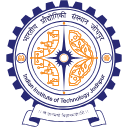

Experience
-
Postdoctoral Researcher
Singapore Management University · Full-timeSchool of Computing and Information Systems. Advisor: Prof. Archan Misra. Human-centred pervasive computing, wearable sensing, and intelligent ubiquitous systems. -
Visiting Researcher
University of Maryland, Baltimore CountyMPSC Lab under Prof. Nirmalya Roy. Domain adaptation for wearable human activity recognition. -

Teaching Assistant
Indian Institute of Technology JodhpurTen courses across Mobile and Pervasive Computing, Data Structures, Database Systems, Operating Systems, and more. Outstanding TA Award, 2022. -
FS
Web Developer (Research)
Futural Solutions -
Android Developer (Internship)
Airports Authority of India
Education
-
Indian Institute of Technology Jodhpur
Dual Ph.D. – M.Tech., Computer Science and EngineeringPrime Minister Research Fellow (PMRF). Supervisors: Dr. Suchetana Chakraborty (IIT Jodhpur) and Dr. Sandip Chakraborty (IIT Kharagpur).
Thesis: Wearables for Personal Well Being and Digital Health: A Pervasive Sensing Perspective -
Guru Gobind Singh Indraprastha University
B.Tech., Computer Science and Engineering
Systems I built
12 sensing systems and tools, from prototype to user study. Each links to its paper; code and video links appear as they are released.
MorsEar
Covert messaging through jaw-tap Morse code sensed by earable IMUs.
HydratEar
Non-invasive hydration monitoring with in-ear acoustic reflectometry.
BiteSense
Eating-behaviour assessment from earable inertial signals.
SpineSense
Spine and neck movement monitoring to combat neck pain.
WristSense
Hidden wrist strain in routine activities via inertial tokenisation and LLM feedback.
EarControl
Hands-free mobile interaction driven by earable gestures.
CompulsEar
Detection of body-focused repetitive behaviours with earables.
EarFence
Lightweight ultrasonic defence for smart earbuds against hidden commands.
EarDesk
Desktop BLE framework for eSense IMU data collection and configuration.
enVolve
Monitoring involvement of silent listeners in online meetings.
VectionSense
Multimodal inertial-physiological cybersickness detection in consumer VR.
LegalHelper
Low-cost tool for smart translation and creation of legal contracts.
Teaching (IIT Jodhpur)
- 2025 – CS7460, Mobile and Pervasive Computing [Fall], 21 students
- 2025 – CSL2020, Data Structure and Algorithms [Spring], 84 students
- 2024 – CSL3050, Database Systems [Fall], 93 students
- 2024 – CSL2020, Data Structure and Algorithms [Spring], 204 students
- 2023 – AIL7460, Fundamentals of Distributed Computing [Summer], 34 students
- 2023 – CS7460, Mobile and Pervasive Computing [Spring], 76 students
- 2022 – CSL3030, Operating Systems [Fall], 99 students
- 2021 – CSL2040, Mathematics for Computing [Fall], 89 students
- 2021 – CSL1010, Introduction to Computer Science [Spring], 245 students
- 2021 – CSL3020, Computer Architecture [Fall], 150 students
PMRF outreach & external teaching
- 2025 – Tutorials on IoT, IIIT Sonepat, India
- 2024 – Tutorials on Fundamentals of Computer Science, Nehru Inter College, Siddharth Nagar (U.P.), India
- 2024 – Tutorials on DBMS, IIIT Sonepat, India
- 2023 – Tutorial on Awareness on ICT Tools, Sarvodaya Boys Sr. Sec. School, Delhi, India